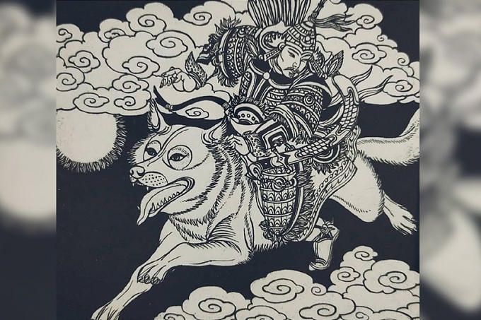

Гэсэр — герой эпической традиции народов Центральной Азии и Тибета, культурный герой, защитник людей, победитель чудовищ и демонических сил.
В разных версиях эпоса он выступает как сын неба, небесный всадник, воитель и правитель. Его образ объединяет мифологическое, эпическое и религиозное значение.
Для народной традиции Гэсэр важен не только как герой сказания, но и как символ борьбы добра и зла, восстановления порядка и защиты мира людей.

В научной литературе Гэсэр рассматривается как центральный персонаж героического эпоса и один из ключевых образов мифологической традиции народов Центральной Азии. Он описывается как культурный герой, ниспосланный небом для восстановления порядка, защитник людей и победитель демонических сил.
В ряде версий он связан с образом Сына Неба и небесного всадника. Его фигура соединяет небесное происхождение, воинскую силу, царскую власть и сакральную миссию.
Эпос о Гэсэре существует в нескольких крупных традициях. Обычно выделяют тибетскую, монгольскую и бурятскую версии. Они связаны между собой, но отличаются деталями сюжета, именами персонажей и особенностями местной культуры.
Бурятские тексты, записанные и изданные в XX веке, считаются самостоятельной ветвью центральноазиатской эпической традиции. В материалах проекта также отмечается, что для изучения образа Гэсэра использовались как собственно эпические тексты, так и научные исследования по мифологии и поэтике эпоса.
По сказаниям, мир оказывается нарушен злом и чудовищами, поэтому высшие силы посылают героя на землю. Гэсэр приходит в мир не сразу как великий правитель: в некоторых версиях сначала он рождается необычным ребёнком, которого недооценивают окружающие.
Постепенно он проявляет свои особые способности, проходит испытания, побеждает в состязаниях, получает коня, оружие, власть и своё великое имя. После этого начинается главная часть эпоса — подвиги Гэсэра.
Герой отправляется в походы против врагов и демонов, освобождает близких, возвращает похищенное, побеждает чудовищ и подчиняет враждебные силы. Его победы означают не только личную славу, но и восстановление справедливости и правильного порядка в мире.
Согласно многим сказаниям, Гэсэр является сыном небесного владыки. В некоторых версиях его отцом называется Хормуста-хан. На земле герой появляется в неприметном или даже отталкивающем облике, но уже в детстве показывает чудесные способности и силу.
В одном из известных сюжетов он побеждает в состязании, получает невесту, трон и сокровища, а затем обретает свой истинный величественный облик. Так подчёркивается его особое предназначение.
Основная часть эпоса посвящена подвигам героя. Гэсэр сражается с чудовищами, демонами и враждебными правителями, угрожающими людям и миру. В разных версиях он уничтожает демонических царей соседних стран, спасает родину, возвращает похищенную жену и восстанавливает справедливость.
Его подвиги показывают его не только как воина, но и как героя, который защищает свой народ, возвращает порядок и выступает против хаоса.
В традиционной культуре Гэсэр воспринимался не только как герой эпоса, но и как охранительное божество. Ему приписывались функции покровителя воинов, защитника стад, победителя демонов и подателя счастливой судьбы.
Поверья связывали героя с исполнением самой эпической поэмы и с особыми возможностями сказителя. В ряде традиций Гэсэр ассоциировался с небом, белой горной вершиной, домом из облаков и туманов.
Имя Гэсэра часто связывают с формой титула «кесарь». В символическом плане его образ связан с небом, войной, сакральностью, защитой и победой над злом.
Через фигуру Гэсэра раскрываются представления о борьбе добра и зла, героическом служении и связи земного и небесного миров.
Образ Гэсэра описан как один из ключевых образов мифологической традиции народов Центральной Азии. Он важен не только как главный герой эпоса, но и как фигура, через которую раскрываются представления о борьбе добра и зла, о защите мира людей, о героическом служении и о связи земного и небесного начал.
В этой системе Гэсэр выступает не просто сильным воином, а героем с сакральной миссией. Поэтому его образ одновременно читается как мифологический, эпический и религиозный: он ниспослан небом, действует в земном мире и восстанавливает нарушенное равновесие.
Гэсэр связан с символикой неба, воинской силы, царской власти, защиты и победы над злом. Его образ соединяет представление о небесном происхождении и идею земного подвига, поэтому он воспринимается как герой-посредник между двумя мирами.
Исследовательская литература подчёркивает, что через фигуру Гэсэра эпическая традиция говорит о справедливости, долге, служении и освобождении мира от хаоса. Благодаря этому он становится не просто персонажем сюжета, а символическим центром всего повествования.
Эпос «Гэсэр» представляет собой сложную знаковую систему, где центральный герой выступает символом освобождения мира от зла. Это позволяет читать образ Гэсэра не только как участника событий, но и как носителя мировоззренческого и космологического смысла.
Важный слой такого прочтения связан с числовой символикой мироздания. Пример, число пять соотнесено с пятью элементами витальности: сознание — небо, дыхание — ветер, тепло — огонь, кровь — вода, мышцы — земля. На этом фоне образ Гэсэра оказывается включён в большую систему представлений о порядке мира, а не только в цепочку героических подвигов.